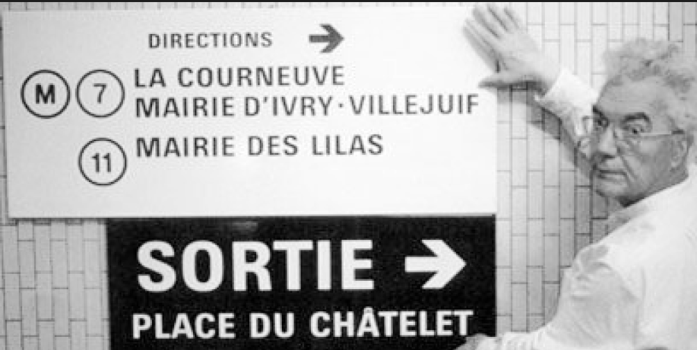

Some typefaces are just perfect for certain things. I've
specified exotic fonts for identity programs that work
beautifully in headlines and even in text, but sooner or later
you have to set that really tiny type at the bottom of the
business reply card.

Careful, though: some typefaces work too well.
________ has been used so much for signage programs in hospitals and airports that seeing it now makes me feel that I'm about to get diagnosed with a brain tumor or miss the 7:00 to O'Hare.
________ has been used so much for signage programs in hospitals and airports that seeing it now makes me feel that I'm about to get diagnosed with a brain tumor or miss the 7:00 to O'Hare.